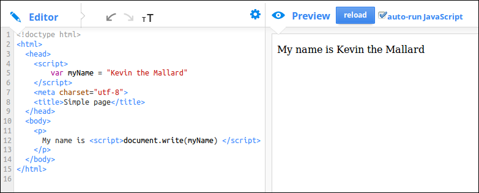
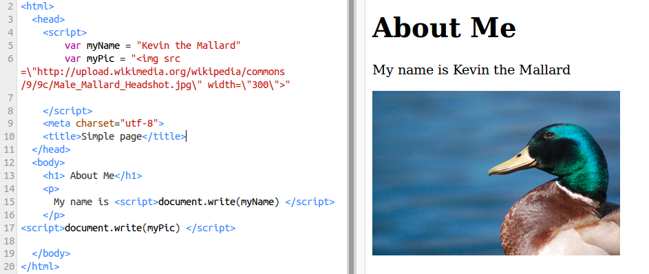

Here we see how we can use a series of Javascript commands to create a series of elements of a web page.
45 minutes to an hour
Preparation
First do the activities on your own to become familiar with them.
To complete this session you should know a little bit about HTML the language used to show the contents of web pages. Have a look at the
resources below and think about ways of integrating this into your session if you learners have not come across HTML before.
10
min
Introduction
A short introduction about Javascript and creating web pages.
Normally we write the contents of web pages in HTML. This will include text, images, forms etc.
When creating web pages we can make them more interactive with Javascript.
We can also use Javascript to create a series of instructions like a recipie to create a web page.
In this session we will use variables in Javascript to output one part of the web page after the other. This will teach us about two areas:
What HTML we need to create simple web pages
How we can create a simple program / algorithm (a series of instructions) with Javascript
Hopefully you are good at following instructions because there is a mission to save a strawberry that needs people to pay careful attention.
Some instructions are tricky and you have to follow the steps exactly and in the right order. Writing web pages is a lot like this.
Watch the video on this page to find out more about sequences in text-code (like Javascript). If you want to you can read the three pages there later and try out the quiz (but you don't need to do that in this session)
10
min
Prepare to be a-Mazed
This activity is good to show you how to make a sequence of instructions.
Share back with the group. How far did you get? What mistakes did you make. How did you solve them?
Blockly is a game which uses block coding to show you how to create a sequence of instructions. When you solve the puzzle it shows you what the instructions would look like in Javascript.
15
min
HTML catch up - Research and Physical activities on HTML
To complete this session you should know a little bit about HTML the language used to show the contents of web pages. You may have done
another session about this. If not here are some activities and online tutorials which can help you get started.
If you have a fun group to work with or if they need something to help them get lively you can use some physical activities to explore the basic make up of an HTML page. Try the ones below:
Remix Activity - Use Javascript to create a simple about you page
If you are in a workshop, split learners into groups of 2 or individuals if there enough computers. We will use the console to find out more about how Javascript can write to our web pages.
Change the value of variables in the code to create a simple page about you.
Change the order of the sections by cutting and pasting the right parts of the code.
15
min
Experimental Activity - Use the console to create a page with Javascript
We are going to write to a simple web page in an unusual way using the console. Follow the instructions below.
Open Firefox (or other browser)
Point your browser to http://webmaker.org (most any page will do)
Press F12 to bring up some tools
Click on Console
Press F12, find the Console (see image below)
If there are messages in the console you can click on Clear to get rid of them.
Find the Console in Firebug or Chrome, press Clear.
Write the following line into the console and press ENTER key.
document.write("<h1>A little about Me</h1>")
You should see the result. You have taken over the browser and are writing to the page using a Javascript function.
Function is a new word for us.
In a nutshell a function is a short cut for doing something in Javascript. This function writes the value or variable between the () brackets
to the web page. In coding we call the web page a document.
Let's learn more about hacking and taking control over our browser using Javascript.
You may have tried out this activity already but this time we will take it further, so try it again. Just browse to a site with lots of images, like a news-site homepage, or a Google image search results page, then click the “Hey French Toast” link that you just added to your bookmarks. If everything is working right, all or most of the images on the side should now be pictures of french toast!
CHOOSE YOUR OWN THEME
Now it’s time to make your own! First, you’ll need to pick a new theme for your bookmarklet to replace all of the french toast pictures. What’s your favorite food or celebrity or TV-show or musician or ANYthing - be creative (but school appropriate, please)!
FIND IMAGES
After you’ve got your theme, use Google Image search to find a bunch of images to replace the pictures of french toast in the original code. You’re going to need a bunch of different images of your theme, as you find them open each in a new tab (or copy/paste the image URLs into a text file. Here’s what to look for:
5 horizontal or “landscape” images (this means that the picture is wider than it is tall.
5 vertical or “portrait” images (taller than it is wide).
3 square images (both the height and width are the same).
Make sure your images aren’t too big! Try to keep the width and height under 800 pixels each. Hint: you can use the ‘advanced search’ in Google Images to find ‘medium’ sized images.
Your bookmarklet will be more fun if some of your images are animated gifs!
REMIX THE CODE
Go to original French Toast Thimble link and click “Remix”. Scroll down to Line 72 in the Editor pane on the left to see the first instruction for making your own bookmarklet. All of the instructions to remix the code are inside the editor as comments. The comments will tell you which sections of code to change and which you can leave alone. Comments look like this:
HTML comments:
<!-- Hello! I’m an HTML/CSS comment. -->
Javascript comments:
// Hello! I’m a javascript comment.
TEST
To see if your code is working, save and publish your Thimble remix and try to install your new bookmarklet in your browser. Go to any website and click the bookmark!
Exploring: Create your own series of instructions in a web page
Computer programming is all about creating a list of instructions that you follow exactly.
We call this list of instructions a sequence or an algorithm. When we put these sequences together they form a program. We need these skills to create our own web pages.
Thimble is a tool that lets you create web pages online. You type in the code on the left and you can see the result as a web page on the right.
We used it when we remixed the About Me page in the above activity.
Now it is time to create your own page from scratch. If you are not sure what information to share you could include some of the following:
Your name:
Your age:
Where you live:
A picture of your town or favourite person:
How to create a sequence using variables
The following activity creates a web page using Javascript variables with information about you.
To make a sequence of HTML statement we will create a list of variables at the top of the page. And then make a list of commands using the document.write() function to write to our web page.
In coding language we say we declare the value of variables first and call the document.write() functions using the variables later.
In real life you probably wouldn't create such a simple web page using javascript but it is a good exploring task for us to do this before moving on to more complicated examples.
To start with keep it very simple. A first step might look like this:

Keep building this up adding different variables and write functions to your page.
Use this as a way to explore different HTML tags from our HTML cheat sheet
Let's Explore
How to add images
To add images to your page you need to add code similar to the following to your page.
IMG stands for Image and SRC is URL source. It is the source of the image on the internet. When you look for images
you can copy the image URL and paste it into your code. When you see an image you want you can right click it and choose Copy Image Location or Copy Image URL.
Be careful: If you are using Google Images, if what you copy and paste is very long and doesn't end with a jpg, gif or png then something is not right. When you are previewing images, click on View Image and try again.
Also be careful about quotation marks.
We tell javascript that our variable is a String by putting it in quotion marks. The danger is that if there are also quotation marks in our string that we'll make an error. To avoid this we do a thing called escaping quotation marks that we want to keep inside our string and we do this by putting a \ infront of them. See the following image for an example.

5
min
Wrapping up -
We have learned the following things.
Web pages are a series of instructions that we write to the web browser screen including text and images.
We can write elements of web pages using variable containing data and functions.
We have to be very exact about the data and order we put them in for our sequences to work.
Sometimes we need to "escape" quotation marks if they are present inside String variables.